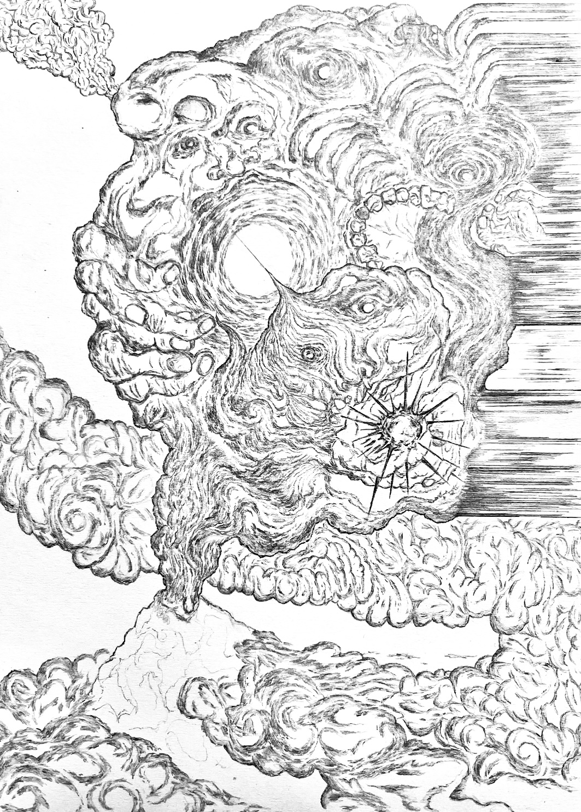

1
Why does the nature of our existence revolve around memory and our proficiency of memory? Is something that is more ‘memorable’ more valuable than something that is ‘unmemorable’? Is something that takes longer to make more memorable than something which was done in a single stroke? Value and memory, and memory and value. Is something that lasts hours like a novel, or a feature film, more valuable than something that is shorter, like a short story or a short film, or even something that lasts but for a moment, that is fleeting and ephemeral? Does something that lasts longer inherently create a deeper emotional impact than something that lasts momentarily? Or are they different? Is the experience so different that although, say, a novel and a short story are both prose, they are different forms and therefore the form is in fact dictating an artworks memorability and thus its value? Are these the planes of aesthetics that deal with our emotions from moment to moment as opposed to deeper things like the soul and our subconscious?
Chat GPT:
Your questions delve into the complex interplay between memory, value, duration, and emotional impact in the context of art and human experience. Various philosophical and psychological perspectives can shed light on these inquiries. One philosopher who has explored the relationship between memory and value is Henri Bergson. Bergson's concept of duration and his exploration of memory in works like "Matter and Memory" could provide valuable insights into the nature of our existence and its connection to memory. In terms of the value of something memorable versus unmemorable, you might find interest in Walter Benjamin's essay "The Work of Art in the Age of Mechanical Reproduction." Benjamin examines how the uniqueness and authenticity of a work of art contribute to its aura and, consequently, its perceived value. For discussions on the impact of duration and brevity in art, you might explore the ideas of film theorist André Bazin, who wrote about the ontology of film and its ability to capture reality. Additionally, the Russian formalist Viktor Shklovsky's concept of "defamiliarization" in literature could be relevant to your exploration of what makes something memorable or impactful. Regarding the emotional impact of short versus long works, you might consider the works of film director Andrei Tarkovsky, particularly his book "Sculpting in Time," where he reflects on the temporal aspect of cinema and its emotional resonance. In contemporary literature, Susan Sontag's essays, particularly those in "Against Interpretation," explore the aesthetic experience and the ways in which art can evoke emotions, offering insights into the multifaceted relationship between art, memory, and emotion. Your questions touch upon the realms of aesthetics, psychology, and philosophy, and exploring these perspectives can provide a richer understanding of the intricate connections between memory, value, and emotional impact in our experiences with art and existence.
I’m going to write this as a rolling ball which gathers things along the way. You’ll be able to see it’s scaffolding as well as its final form, a technique which is very in vogue today.
2
So I picked up the 4 books I requested from the State Library’s collection. They are all old, haggard things, except for maybe the book full of Bazin’s essays. But all of them except that one are hardcovers, with that hard, clothed, book cover material from the early part of the last century. Is looking back on those that came before important, especially considering that these works are from an era that is so different to ours? I liked Felix’s perspective on the method of the exquisite corpse in that he treats his work, or any work, as a sort of “exquisite corpse” in the sense that you are always building on or standing on the shoulders of those that came before. Yet film has changed so much, as has art, as has our perception and how we consume art, and I wonder if any of these texts will be enlightening in any way or lead me in the right direction. Flicking through some of them, I think that Susan Sontag’s Against Interpretation seems the most promising - but there is so much to read! Do I even have the time to really commit to researching this project deeply, a project which started with a thought that just popped into my head as I walked home after catching the bus back from the library, a thought that seems promising but may not really lead anywhere? How do people know that a thought is promising, or an idea promising, so that they commit 100 percent to the cause and to its total completion? I was thinking today that I don’t really want to write an essay, as much as it will be an ‘essay’ in the loose definition of the term, as Felix pointed out, the essay as a form can be quite loose and digressive in nature; I really don’t want to write something that is too didactic, well-presented, well-researched, highly-edited, and/or extremely refined. No, I was thinking more about the reflection as a form could be a more interesting and a more natural route for me to take, where it could be more like a series of diary entries. It will be an essay but have elements of a reflection, or a reflection that has elements of an essay. I am exposing the scaffolding here, making it up as I go along, and after reading Jon Fosse’s Melancholy I, I am excited to carry forward more of a stream of consciousness approach, more than a stop-start-edit, stop-start-edit approach. As much as I will edit this final document, and some of these words I write now will be omitted and others added, my plan is to be quite free and light with how I write and how I edit. I am treating this like an experiment, like how this essay/reflection will speak to the film Poor Things and it’s lasting impact on me, I too will be a Godwin of sorts, putting together a sort of Franken-text, learning and observing as I go along while simultaneously learning and writing about the thing I am writing about. What is that I am writing about again? Memory and value. Value and memory.
Still need to pick up Illuminations, a collection of essays by Walter Benjamin, and order Sculpting in Time by Andrei Tarkovsky.
3
So it seems like my initial approach, that is through extensive research into memory and value, seems to disintegrate in the face of empirical experience. I have realised that film is empirically experiential and that theory, although necessary and interesting, does not substitute or have much to do with the experience of watching a film. I write this now as I have just returned home after watching Poor Things for the second time and I struggle to lean down to pick up any of the books I borrowed from the library, mainly because I don’t think any of them could go any way into explaining any of what I just watched in the cinema. These books feel burdensome in some way, as though their physical weight bears down, flattens, and squashes the magical experience I just experienced and the melancholic glow I am now feeling. I just don’t think the books will do anything to help me explain what I am feeling now. On the bus home I was thinking a lot about how this poem I wrote the other day and how it could be connected to Poor Things in some way, and I think the poem, although very loosely connected to the film, and although very personal and dark, might be a good starting point. Here it is:
If I could just
Maybe I could just
If only it would
Maybe all of it would
What is this
What is all of this
What is happening
It’s all so
What if all of it was
I wouldn't be such a
I'm such a
Fucking schizo cunt
You're such a
You're such a paranoid schizo cunt
I hate myself
Fuck this
I’m a fucking fuckhead
I can't take this anymore
Why am I so fucked
What is going on
Maybe I could just
If only I could just
There is a
And it never goes
What will tomorrow bring
If it could all be so
Then maybe I would be
And all would be
And life would be
Perhaps it's not real
It could all be in your head
Perhaps none of it is
And it’s all in your
This is so negative of me to say all of this
What am I supposed to do
Will it ever get
Will any of it get
Just leave me alone
I just want to go home and read my book
I'm insane
I'm so fucking fucked
I'm going insane
I'm crazy
I'm crazy and fucking insane
I'm so fucking over it
It never stops
It just never stops
If it could just stop for one second
Just one second
Maybe I'd be better
Perhaps it wouldn't be so bad
And I could be
And all would be
And life would be
I'm not responsible for other people's feelings
It's not my business what other people think
That's what I said to myself today
That I'm not responsible
That it's not my business
That I should just be myself
Just be myself
It's hard to be
It's hard to be myself sometimes
Life was going so well
And it seems like life is going so well
As you can tell I was going through a fairly tough time when I wrote this. The paranoid thoughts and feelings I was experiencing drove me to this very dark place which I hadn’t ventured to for quite some time, and it was in that moment I wrote this poem. A few days later I thought this poem would make a good suicide note. I really wanted to commit suicide. But I knew I wouldn’t, and I knew I couldn’t, but I really wanted to, and it was tough, really tough. It was a really dark thought that this poem would make a great suicide note, but sometimes we end up in these places. Everyone can feel suicidal from time to time, like they no longer want to live. Everyone can want to kill themselves sometimes because it feels like it is the only thing to do, that it will make things better that is, and that it is the only thing you can do to make the pain go away. As you can tell I was going through a dark time. I thought about my sister finding this poem, printed on an A4 sheet, not handwritten for some reason, and seeing that even though I may have been dead, she would at least know how much I was suffering and that she would understand and that she could forgive me for my selfishness and see that maybe it was for the better. And then of course there are other times when killing yourself seems like the last thing on your mind, that you want to be alive, that you don’t want to die today because you are enjoying life so much and you think about your future and how much you’re looking forward to the future and all of the things you’ll do and the places you’ll go. And when you feel sad again, you might remember the people you love and how much they mean to you and that you just couldn’t ever kill yourself because you just couldn’t do that to them because all you would do is pass on the pain and suffering. Poor Things started with a suicide. Victoria Blassington jumped off a bridge and killed herself and Godwin Baxter found her and discovered she was pregnant and so decided he would cut out the brain of the infant and replace the dead brain of Victoria with the alive infant brain and reanimate the body. Thus was born Bella Baxter. Quite simply the analogy would be, after death comes life, out of darkness comes light, death and rebirth, light and dark. I can tell you now, looking back to the time I wrote the above poem, which was only 3 or 4 days ago, that time already seems quite distant and the feelings I had then do not at all relate to what I am experiencing now. Because Poor Things is full of life, and in many ways is a celebration of life, life as a whole, not just the good parts or the bad parts, but the whole spectrum of emotions; it has filled me with optimism and vitality. Poor Things covered everything there is to life, from joy to sadness, euphoria to dysphoria, confusion to conviction, pain to pleasure, polite society to truth, truth to what is the truth?, black and white to colour, good sex to bad sex…a series of dichotomies, which is a representation of our world, the world of opposites, and Godwin, who is God, creates Bella, who is human, and God sets Bella forth into the world. Bella discovers this world of opposites and feels things and discovers things and grows and improves her understanding of things and this world, and to “know the world is to have the world” and she navigates this world of opposites, our world, our reality, which is both cruel and kind. Poor Things is an allegory. Godwin is God and Bella is humankind, and Godwin created Bella, as God created humankind. Bella sets forth into the world to learn about what it means to be human. To be human is to experience the human experience, from logos to pathos, from things a priori to things a posteriori, from emotions and feelings to thoughts and ideas, from cynics to optimists, from sly dogs to those well-adjusted. Bella experiences it all, really, and interrogates her experiences like making an incision with a scalpel from God’s surgery. She does not shirk from getting to the bottom of things.
4
I opened Susan Sontag’s collection of essays called Against interpretation and other essays and read the first essay which was titled “Against interpretation”. It really spoke to me in a way I didn’t expect it to. Her criticism was mainly aimed at the pitfalls of interpreting art and texts and how the interpretation of art strips away the essence of the work of art and creates false or fabricated “shadow worlds” of meaning. But what spoke to me most was her ‘meta-criticism’ which spoke to criticism itself and criticism’s role in the interpretation of art. She acknowledges the long-established history of the interpretation of art, who’s zenith phrase would be “texts have no meaning without interpretation”, and in Sontag’s eyes, interpretation merely reduces the work of art to its content so that it becomes more “manageable, conformable”. She notes that there are “thick encrustations of interpretation” around many great works by authors such as Beckett, Joyce, and Dickens (to name but a few) and these encrustations are people’s incessant attempts at interpreting the work of art almost to the point of maiming. I think back to my interview with Felix McNamara and how he said that one way of looking at Joyce’s novels Ulysses or Finnegan’s Wake is to look at it from the perspective that you are listening to a piece of music, or listening to another language. Felix noted that you can read these texts with this “huge exoskeleton of information” and for a novel like Finnegan’s Wake, a novel which is broadly speaking quite abstract and indistinguishable and perhaps entirely illegible when trying to “parse a basic meaning”, interpretation can lay it all out for you, sentence by sentence, telling you what each line means and how each paragraph relates to the one before and so on. But what I think Felix was getting at when he was talking about music was that you don’t necessarily need to derive meaning from these texts. If you treat them as though they are an “aesthetic experience” as though they are a painting, a piece of music, or a work of art, you can experience them for what they are. To continue with Sontag’s line of thinking, to derive meaning from these texts, by interpreting them, you lose the essence of the work of art and “impoverish” the work of art. Sontag asks “what kind of criticism, of commentary on the arts, is desirable today?, and “what would criticism look like that would serve the work of art, not usurp its place?” Her answers to these questions are to consider the idea of “transparence”, which is the “most liberating value in art and criticism today” and transparence means “experiencing the luminousness of the thing itself, of things being what they are”; and that “the aim of all commentary on art should be to make works of art - and, by analogy, our own experience - more, rather than less, real to us.” “The function of criticism should be to show how it is what it is, even that it is what it is, rather than to show what it means.” This sort of criticism or commentary is what I hope to achieve with the criticism I am writing here, and perhaps beyond. Less of this is what the thing means and more of this is my experience of the thing…if that makes sense.
Short postscript. So in the end one of those burdensome books proved to be very useful. I think I’ll read a little bit of Henri Bergson’s book Matter and Memory, just to get a taste of it and see where it leads. I’m doing this all very adhoc and to borrow the phrase ‘meta-criticism’ from Susan Sontag, I am meta-criticising my own criticism in some way (does this make this article an autofiction?) Perhaps my trains of thought are still inchoate and because of this I should really digress more and investigate more, like Bella Baxter would. I have absolutely no idea if I will return to my first questions about memory and value in art. I’d like to think I will and I will try and tie-in my thoughts on Poor Things as I go along. There are a few lines/visions from the film that I’ve been repeating to myself, such as Duncan Wedderburn’s “rollicking” or his “made with gusto, like life itself” or God’s last words “It is all very interesting, what is happening.” And I too have been thinking a lot about Bella, and how she navigates the world, and how I could take a leaf out of her book, to be more inquisitive and curious and to say things as they are and to stand up for myself, and that perhaps one day, I can return to loving someone who is a loving person (Bella returning to wed Max McCandles). Poor Things was memorable, and right now, I can say that that makes it more valuable. But does value matter? Well we are not preserving 5 second TikTok videos on 35mm, so I suppose it is definitely a thing. But I am not really concerned with value right now, at least not monetary value, but value in the sense that it is culturally significant, and in turn, is a memorable work of art.
5
I’m at the State Library of Queensland right now which has been a refuge from home life and the summer heat for many years. I just skimmed Henri Bergson’s book Matter and Memory hoping to find something more about what I was writing about earlier, about memory and value, and I found it to be, quite frankly, over-complicated and to my eyes, almost unreadable. I don’t know what it is but I find some books very difficult to understand. Bergson was throwing down some serious theories about memory and perception and basically codifying our everyday experience into some sort of ‘system’ that consists of ‘pure memory’, ‘memory-image’, and ‘perception’ and at one point illustrates this system through a graph. I found the whole thing very didactic, dry, and to be frank, boring. It’s a hefty book and I’m sure he put a lot of time and effort into it, but will anyone read it? I certainly won’t, and even though I find discussions on memory intriguing, his digressions were difficult to understand, and again, very dry. Is this the case with all continental philosophy? I’ve always found reading deep-philosophical material extremely draining and at times incomprehensible and totally unreadable, such as when I recently read some of Carl Jung’s Red Book. What is essentially his diary, I was dismayed to find that the book was so deeply abstract and dense that I could not find much practical use in most of what I read. In the end I had to put it down. Compare that to my recent reading of Alain de Botton’s Essays in Love and you’ll find that I was actually able to absorb and apply each passage to everyday life. This is mostly likely because De Botton used language that was easy to follow and also, significantly, because what I had or hadn’t read before wasn’t consequential to my enjoyment of the book. And this comes back to memory in many ways due to the fact that something that is easier to follow and much more approachable and much more digestible is inevitably much more memorable. Ironically, Bergson’s Matter and Memory was wholly unmemorable because it used complex language, was difficult to follow and didn’t really excite me in any way. There was no way for me to relate my everyday life to Bergson’s concepts, whereas De Botton’s essays on love were weaved and entwined with the everyday. I don’t know whether this difference in readability and relatability and memorability is something specific to the writing style of each author or whether there is has been a deeper shift in aesthetics between the two works, published nearly a century apart (Matter and Memory was published in 1896, and Essays in Love in 1993). I have a feeling that it is certainly a combination of both. Whatever it is, De Botton’s book seems to have a lightness and liveliness to it, whereas Bergson’s seems heavy and dry and lifeless. Thinking now, Poor Things (which I am continually trying to make the focus of this discussion and failing somewhat) had a lightness and liveliness to it compared to a film like Stalker, which was slow and heavy (although not ‘lifeless’). Both were extremely profound experiences, yet totally opposite in their aesthetic language. Can the world of literature then be in any way comparable to the world of films? Perhaps this is a me problem. I’ve watched a lot of films yet I haven’t read widely, especially into continental philosophy or classical texts and thus I find more modern texts to be the only texts which I can really read with some level of enjoyment. There is a canon with literature, a canon which is millennia old and which carries with it a vocabulary, both in the literal sense as in a vocabulary of words, as well as a vocabulary of ideas, and this vocabulary, and more broadly this language of aesthetics, is something that I am not really familiar with, and ultimately I find myself totally lost in the mire whenever I open one of these books. Film on the other hand is still inchoate, having only really existed in it’s current form since the 1920’s, and is still discovering its own aesthetic language. The closest thing that sort of bridges the gap between literature and film would be the theatre, in the sense that, like literature, it has a long history and thus has its own particular aesthetic language, and like film, it is a visual-auditory medium. Plays are the link here, where plays are the more esteemed version of film, and plays the more abridged version of literature. But to quickly return to film and our discussion between Poor Things and Stalker, and between things light and heavy, there are different approaches that artists can take and still create something memorable. As I’ve described, Poor Things was light and lively and this was in many ways due to its dark sense of humour and uncanny parody of ‘polite society’. On the other hand, Stalker was deep, so deep it was as though you were peering into the chasm of each character’s soul. I’ve seen both Poor Things and Stalker twice, and each time I watched them they were unforgettable experiences. Here I’d like to stress that Bergson’s work, although I’m sure extremely deep and profound in its own way, was more interested in the workings and mechanics of memory rather than what makes a work of art memorable. One thing I did learn from Bergson was that repeating something to learn something strengthens your grasp of that something, and in my repetitive action of referring back to Poor Things, I am inadvertently returning to the past and my experiences of the film, which in turn strengthens that memory, thus making the film more ‘memorable’. Yet I am aware of the general consensus that memory is malleable and events of the past can be reshaped depending on our doings in the present, and that also we are very selective in the information that we retain and what we can recall when describing a memory of something. In that sense there is an abstract quality to memory that makes it difficult to quantify something as being more ‘memorable’. This is perhaps where my initial questions on memory and value come to an end. Perhaps after watching Poor Things someone took greater notice of the costumes, another might laugh to themselves after remembering an absurd piece of dialogue between Bella and Duncan Wedderburn, or an architect might use the majestic set design as inspiration for a new project. We retain things that serve a function in our lives, and for that reason it is difficult to pin down exactly whether something is more memorable or not. This question of ‘memorable art’ has to do with aesthetics, and perhaps a book that I am currently reading “Introducing Aesthetics” will give me some clues. Perhaps the word isn’t ‘memorable’ but ‘impactful’. Even still, although it seems like a feature film like Poor Things is much more impactful than a short 10 second TikTok video seen on a phone, it is difficult to answer precisely ‘why?’. The question now is whether I continue my investigation into art and memory (which at the moment seems to be heading towards a dead end), or whether I change tack and take on a more pure, film criticism approach. My hunch is that Susan Sontag’s and Andre Bazin’s film criticism will point me in the right direction.
6
A shot is a shot is a shot.
7
Am I missing something here? Am I too quick to judge? I ask these questions because I read a few excerpts of the two books, Bazin at Work and What is cinema? by revered film critic Andre Bazin and was once again let down. To sum up: dry, boring, didactic. The passages I read in Bazin at Work were full of the language you would find in a ‘film review’. Sentences were focused on things like style, camera movements, camera angles, camera lenses, shots, mis-en-scene, set locations, set designs etc. etc. This language of the film review is something I vehemently detest largely because film reviews are just a retelling of the general gist of the film while simultaneously not revealing too much about the film (or else spoil the film for the reader), mixed in with some analysis about the film (which never seems to leave the world of the film itself, the film world, the film’s place in film history, or money), and I am honestly so tired of reading the same old dry, boring, didactic (I’ll start using dbd for short) review that I am, myself, trying to challenge. I want to be taken somewhere. I want my mind to be engaged. I want to LEARN something, not just have someone interpret something for me. And interpretation is death as we have both discovered (refer to 4 and 5). Read some reviews of films by broadsheet media like The New York Times or The Guardian and you will see what I mean.
8
Here are some reviews of Poor Things to illustrate my point in 7 (you don’t have to read them, especially if you have an idea of what a modern day film review looks like):
This by Manohla Dargis for The New York Times:
“Poor Things,” Yorgos Lanthimos’s visually sumptuous and gleefully clever new movie, is so very pleased with itself that it makes a review seem superfluous — well, almost. A phantasmagoric take on the classic Frankenstein story garnished with sour laughs, it tracks the adventures of Bella (Emma Stone), a strange Victorian woman with a childish temperament who has a freakish history, peculiar habits, bizarre surroundings and an attentive if altogether unusual guardian, Dr. Godwin Baxter (Willem Dafoe).
Baxter is a renowned, extravagantly unorthodox scientist whose fondness for slicing and dicing the living and the dead makes him seem more like a bespoke butcher. Together with Bella, a maid and a menagerie of his repulsive animal experiments, he lives in an opulently appointed London mansion filled with curiosities that houses a lab in its lower depths. There, he dissects corpses to read their secrets, and a giddy Bella sometimes joins in the fun. When a visitor drops by, Baxter admits that Bella, too, is an experiment, and soon the truth comes out: After finding her corpse, he reanimated her by swapping out her brain for that of a fetus.
Certainly Bella appears full grown from stem to stern, with a curtain of dark, severely parted hair that cascades down her back. Yet there’s an obvious, unsettling disconnect between her body and brain. At times her syntax and lurching bring to mind a toddler — Stone gives Bella the herky-jerky instability of a child finding her sea legs — though in moments she also suggests a damaged animatronic doll. Bella is messy, curious, impolite, violent: Right after she meets a stranger, Max McCandless (Ramy Youssef), she smacks him for no evident reason. Bella, you see, is very much a work in progress. She’s monstrous; she’s also a woman.
Written by Tony McNamara and adapted from the 1992 Alasdair Gray novel of the same title, “Poor Things” gets its weird on from the get-go. Working in a flamboyantly expressive key, Lanthimos deploys all the elements at his disposal — prosthetics, costumes, meticulous production design and pushily showboating cinematography — to create a familiar yet alien world of calculated dissonance. Baxter, for one, is a crazy quilt of horror, much like Frankenstein’s monster. The child of a scientific madman who experimented on him, he has a face that looks like it was chopped into ragged pieces and then stitched back together by a nearsighted tailor. The parts don’t fit, but they don’t fit with exacting precision.
Bella does grow and her fortunes also change courtesy of two suitors: the earnest and toadying McCandless, whom Baxter hires to document her development, and an oily, smooth-talking huckster with nimble fingers, Duncan Wedderburn (Mark Ruffalo). After Duncan tickles her fancy (and other parts), Bella sets off with him across land and sea in an episodic adventure that expands her horizons and revs up the story in earnest. She learns about the world’s pleasures and cruelties, and in classic Bildungsroman fashion develops intellectually and morally (kind of). She converses in complete sentences, reads Emerson and meets a mischievous dowager (Hanna Schygulla) and her jaded companion (Jerrod Carmichael).
Like the monster in Mary Shelley’s novel, the movie is a patchwork. In its overall arc it evokes an old-school picaresque; the chapter titles and an interlude in a brothel summon up “Breaking the Waves,” one of Lars von Trier’s movies about a woman enduring a crucible of suffering. Bella scarcely suffers, which is a relief, as is her unladylike gusto and delight in sex. Her pleasure in her own liberation sustains your interest even as all the fussing and strained eccentricity wears on you. “Poor Things” is about the humanation of a monster, yet because Lanthimos isn’t interested in less obvious, blander human qualities like gentleness, the movie grows progressively monotonal, flat and dull. Its design is rich, its ideas thin.
Ruffalo’s and Dafoe’s performances are precise and refined, even during their characters’ more overstated moments, and each creates deeper, more interiorized men than the dialogue suggests. Ruffalo exposes Duncan’s vanity before the character does, while Dafoe brings to life Baxter’s bifurcated personality, his decency and his sadism, with haunted eyes and brisk, no-nonsense equanimity. Together, the two actors work beautifully with Stone, who builds her performance so discreetly — with words, gestures and footfalls that stagger and halt only to then seamlessly flow together — that it can seem as if all the changes Bella experiences were emanating from deep within the character, not the actor.
Scene by scene, polished detail by detail, “Poor Things” throws a great deal out for you to gawk at, guffaw over and slightly recoil from before you’re prompted to giggle again: a steam-engine carriage with a horse’s head, the biomorphic swirls on a ceiling, the bruising colors of a night sky, a feathered dog. For the most part, these particulars are often comic and eye-catching, having been built for maximum wow. Yet as the story stalls out and all the showy minutiae, the viscera and icky yuks just keep on coming, the cumulative effect becomes bludgeoning. It isn’t long into “Poor Things” that you start to feel as if you were being bullied into admiring a movie that’s so deeply self-satisfied there really isn’t room for the two of you.
Or this by Christy Lemire for RogerEbert.com
Yorgos Lanthimos seems delighted in depicting extreme behavior within pristine settings, whether it’s the quiet suburbia of “Dogtooth” or the clinical lab of “The Lobster” or the opulent grandeur of “The Favourite.” That glaring contrast between the expectations of decorum and the messy truth of humanity seems to fascinate him endlessly.
Nowhere is this conflict more exaggerated and entertaining than in his latest film, and his best yet, “Poor Things.” Everything here is wonderfully bizarre, from the performances and dialogue to the production and costume design. And yet at its core, as is so often the case in the Greek auteur’s movies, “Poor Things” is about the awkwardness of forging a real human connection. We want to know each other and make ourselves known. The figure at the film’s center, Bella Baxter, seeks to achieve enlightenment, become her truest self, and establish enriching relationships with people who genuinely love her and don’t just want to control her. The nuts and bolts of this story may sound familiar: A young woman embarks on an odyssey of exploration and finds her identity was within her all along. The execution, however, is constantly astonishing.
It's Victorian London, and Emma Stone’s Bella lives in a tasteful townhouse with the mad scientist who also serves as her father figure. As Dr. Godwin Baxter, Willem Dafoe offers a gentle presence beneath his scarred visage. Bella is a grown woman but behaves like a toddler at first, grunting out words and throwing plates and dancing gleefully around stiff-legged. She calls him God, and that’s actually not hyperbole. We will learn the backstory behind all of this in time, and I wouldn’t dream of giving any of it away here.
Godwin is one of several men who try to mold Bella over the course of her development; one of his students, Max McCandles (Ramy Youssef), is another. Max moves in with the intention of assisting Godwin in his research but ends up falling in love with Bella and asking her to marry him, and Youssef brings an element of warmth and reason to this otherwise mad world. But he’s no match for Mark Ruffalo, an obvious cad with the very proper name of Duncan Wedderburn, who whisks her away on a lavish world tour. This consists mostly of vigorous sex in a variety of positions—which Bella calls “furious jumping” in her rapidly maturing mind—and it’s a key element to both her independence and the film’s brash humor.
Reuniting with Lanthimos after “The Favourite,” Stone gives the performance of a lifetime in a role that has a staggering degree of difficulty. This could have gone horribly wrong; instead, what she’s doing is wildly alive and unpredictable in ways large and small. Watching her start out big and broad and fine tune the character little by little, physically and verbally, as Bella evolves is a wonder to behold. She’s doing such technically precise comedic work here, especially during the character’s childlike origins, but eventually she’s captivating when she’s fully in command as a sexually liberated woman. Enormously likable, she quickly wins us over to her side even when she’s being an impudent brat, and she keeps us rooting for her in the face of increasing patriarchal oppression.
Ruffalo, meanwhile, is hysterically funny in a way you’ve never seen him before. He’s both a charismatic Lothario and a preening buffoon. He’s also unexpectedly sexy, and, in time, amusingly pathetic. Also among the stacked supporting cast are comedian Jerrod Carmichael and German legend Hanna Schygulla as traveling companions who give Bella a boost in her quest toward self-possession. A sly bit involving a book on a cruise ship is particularly funny. The petite but powerful Kathryn Hunter, so startling recently as the Witches in Joel Coen’s “The Tragedy of Macbeth,” provides a spicy, spiky presence as a Paris madame, but even that small role includes shading you might not expect at the outset.
So much of what is pleasing about “Poor Things” comes from the specificity of the language. In adapting the novel by Alasdair Gray, Tony McNamara’s screenplay begins in intentionally disjointed and stilted fits and starts, but it has a rhythmic poetry about it. The dialogue becomes more florid as Bella blossoms in her intellectualism, and it’s a joy to watch Stone seize upon the complexity of her proclamations. McNamara’s writing here isn’t as deliciously mean as it was in Lanthimos’ “The Favourite,” but it bounces along with a witty bite all its own.
In creating the grandiosity of this world, Robbie Ryan’s cinematography is stunningly beautiful in varied textures and hues. “Poor Things” begins in grainy black and white when Bella is more childlike, with plenty of fish-eye lenses and peepholes to keep us off balance and urge us to lean closer. But it steadily opens up into lush, wondrous color as Bella comes into her own; the nighttime skies during the ocean voyage portion of her journey are particularly awesome. This evolution may sound obvious, but it feels like a magic trick he’s pulled off right before our eyes.
The costume design from Holly Waddington convincingly tells Bella’s story in detailed, vibrant ways. Simple white nightgowns in her girlish state give way to puffed-sleeve explosions, each more elaborate than the last. And the production design from Shona Heath and James Price—where to begin in singing their praises? From Godwin’s slightly off-kilter house to a luxurious Lisbon hotel to a cramped Paris brothel, each new setting imaginatively reinvents the kinds of historical images we might think we know, only through an outlandish prism with hints of Escher and Gaudi.
But none of these exquisite technical elements matter if we don’t care about the woman at the center of them. And we do. Bella remains kind and optimistic even as she sees the truth of the outside world, but she’s also learned enough to assert her newfound power when necessary. It’s as if “Barbie” were actually about Weird Barbie, but even that idea doesn’t quite do it justice. A more apt description is: It’s the best movie of the year.
This is what we’re dealing with. All of these ‘reviews’ are so damn formulaic, hitting all the right notes just like the Hollywood-factory films that I’m sure they all throw their two stars at. I’d throw my two stars at their unimaginative, boring, regurgitation of the same old template: introduce what this film means in the context of the film world (awards, screenings, starring actors or actresses, directors oeuvre), a brief and highly descriptive recount of the plot of the film (with a generous helping of colourful adjectives) but not so much as to give away the entire story, some cool references to other films that are similar to the film being discussed (with some light analysis), maybe return back to the key people in the film? (director, leading actor or actress), and if necessary some notes on the set design or the costumes or the cinematography (whichever is most ‘cinematic’). Now I’m not saying that this is what all reviews are like. Some can actually be quite elucidating. But they are certainly the exception, and I wonder if Bazin, the film critic of the last century, was the spearhead of this formulaic criticism. I don’t think he was. His encyclopaedic knowledge of film and his layered analysis keeps the conversation interesting and moving along. But that unfortunately does not save it from being dbd, and I think that has more to do with his style of writing than his critical arguments. I want more. When I read a review or a critique or literally anything, I want to be moved in some way. I want to be gripped by the thing that I’m reading. I want to learn more about myself. I want to learn more about who we are. Is this too much to ask?
9
I sometimes wonder if I’m looking in the wrong places and that there are people out there writing great criticism, but wherever it is, as you can see, broadsheet media is not where it’s at.
10
Lately, especially since writing this critique, I have been more interested in form rather than content (here I am articulating the views of Susan Sontag). After reading David Foster Wallace’s essay “A supposedly fun thing I’ll never do again” and his essay on David Lynch, “David Lynch Keeps His Head”, I remember coming away from them with a sense of optimism and a new perspective on what ‘criticism’ could be. When you discuss or critique something, you can really just be yourself, and like DFW, you can offer the world a unique perspective on things. With this unique perspective, you can observe, relay, discuss, and analyse with no consequences or having to fit into any one way of doing things. You find your own way. This is perhaps where my passion for criticism comes from, from reading these two essays by DFW. Yesterday, I was listening to the podcast Literary Friction on NTS, and the hosts of the show, Carrie and Octavia, were interviewing the writer, filmmaker, and artist Xiaolu Guo for her recent book Radical: A Life of One’s Own. I listened and heard that the book is basically a series of diary entries that Guo wrote shortly after moving to New York, and this was really intriguing to me because hey, that’s exactly what I’m doing! Anyway, I bought the book and have flicked through it briefly and I think it looks promising in the same way that DFW’s work seemed promising too.
11
I think a lot about Bella. I feel connected to her in many ways. I have a poster of her on my wall. It is a reminder of her whenever I feel troubled. What would Bella do? I ask myself, and the general feeling is that the world is full of possibility. I remind myself that Bella is someone who is curious and inquisitive, that she wouldn’t shirk from the truth for the task of politeness, that she would just do it. Bella would do the thing to find out more about the thing, and having experienced the thing, she would question the thing. She interrogates those very things we take for granted, the things that we dare not question. But why? she would say, but why do we do things that way and not this way?, and why don’t we do more of this thing or that thing?, why don’t we do things we know we should do?, why don’t we give to the poor? why don’t we have sex all the time?, she knows she likes sex, like I like sex, like everyone likes sex, so why is nobody having sex?? You’re cool Bella. Very cool and very brave. You know that to look is to find, and when you look and you find, you do something that many of us find hard doing: you ask the question.
12
A quick note on style. I think with all of the works I have labelled dbd, their dbdness mainly comes down to their style of writing and the language they use. In that NTS Lit Friction show, Xiaolu Guo makes a point about how some authors box themselves into a “particular kind of language” due to them working in a particular genre or a particular form, and Guo preferred the use of an “everyday, intimate language” and a “domestic language" which we use most often in our lives. I would even go further to say that the lexicon of the everyday has become smaller and smaller, and the definitions of many words or even latin phrases that were once commonplace in the last century, are no longer known, or more critically, only known in the academic world. Jon Fosse’s writing style in Melancholy I was fascinating to me. He used very basic language with only a handful of words to construct sentences, and these sentences would be staggered and repeated elliptically over and over again like a Möbius strip or a chiasmus (a chiasmus is when a series of sentences or a sentence is structured like A-B-C-B-A). I found reading Fosse’s book very easy. It was light and very easy to read. So when I describe something as dbd, generally it is because reading it is hard and laborious. This mainly comes down to the style of the writing which makes the whole thing feel heavy and burdensome. It is not always like this however. Reading Anne Carson’s essay “Eros the Bittersweet” was also very easy, mainly because she kept things light and succinct. Bazin’s What is cinema?, for example, is the total opposite, and unfortunately that deters me enough that I no longer wish to continue reading it. Style is important, and perhaps more important than content. Sontag writes about this in her essay “On style” which I will read soon.
(This is the end of the first part of the critique. If you’d like to read on, check out the article More Things ).
Poor Things and Other Things
By Jack Fairman

×

Kratom by Gunung Tan @deepseadepression1luv
eek